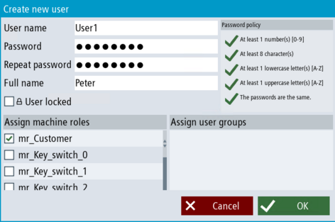

Introduction
If you want to create a new user, you can use the "Create user" dialog. You can create local users independent of whether your domain is connected with a central user management or not.
Requirement
Procedure
-
In the "Setup" operating area, call the user management via the "Security > User management" softkeys.
-
Click the "User" softkey. Click on "+ User" on the overview page to create a new user. A pop-up dialog box opens.

Create a new user
-
Assign any unique user name for the user and an individual password.
|
Note
|
Password notes
-
Note that special characters are not allowed in user names.
-
The password must comply with the rules defined in the Policies dialog. If no individual password rules are defined in the Policies dialog, the password must correspond to the specified standard password rules. The password must consist of at least 8 characters. It must contain at least one lowercase letter, one uppercase letter and one digit. Recommendations for the assignment of secure passwords can be found on the .
-
If you adhered to all defined password policies and the password is not accepted, it is possible that the "Do not use last X passwords" option is activated in the Policies dialog. You probably set a password that had already been used. Define a new password, change the value of the option, or deactivate the option.
-
The user logs into SINUMERIK Operate with the defined user name and password (see User logon).
|
-
Repeat the password.
-
Optionally, enter the first and last name of the user to be assigned to the user name and password. The complete name (or the initials) are used to identify the user in the login button. The user name is used if a complete name has not been saved. In this context, carefully observe the key notes on the General Data Protection Regulation.
-
Optionally, select whether you wish to lock individual users so that they cannot log into the system. For example, if a user temporarily leaves the company, you can lock the user account instead of closing it.
-
Also directly assign users a machine role.
For example, this can make sense if you create additional Security Admins besides the standard Security Admins of the domain. You can then directly link the user with machine role "Security Admin". This means that you can prevent that the local user group is possibly deleted when connecting with the central user management.
-
Assign a user group to the user if you have already created it. To do this, select one or more user groups to which the user should belong.
-
Now click "OK" to add the new user to the list of users. If necessary, create additional users by repeating steps 2-7.
|
Result
You have now completed creation of one or more users.